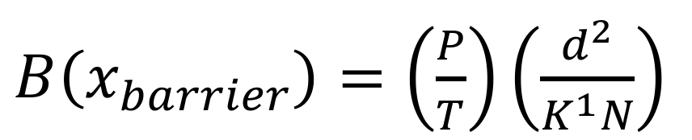
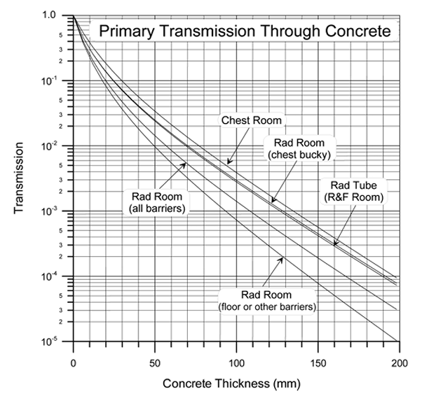
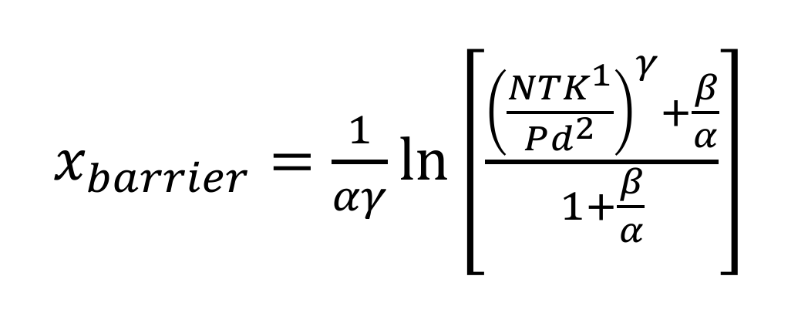
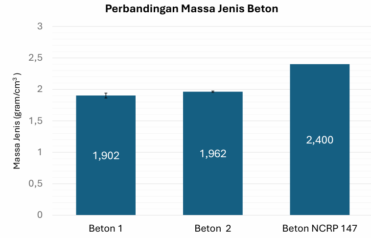
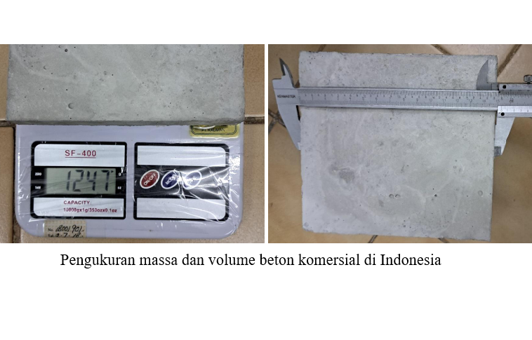
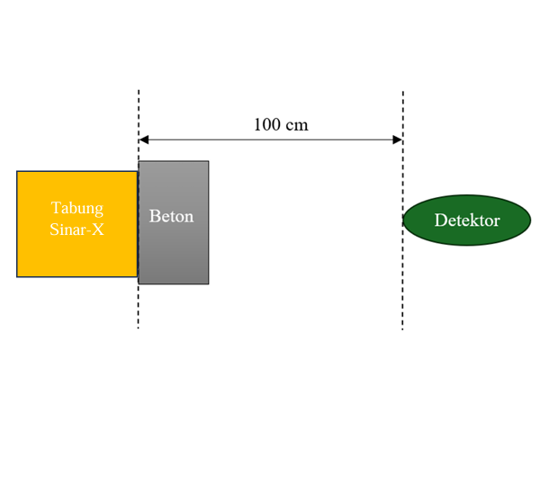
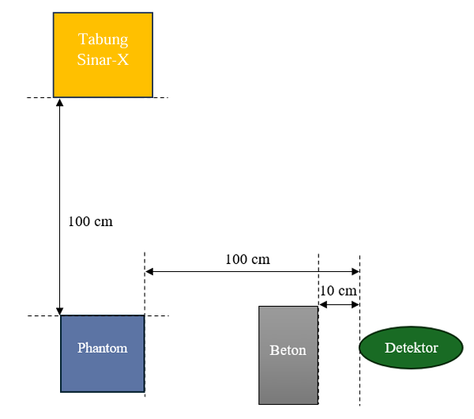
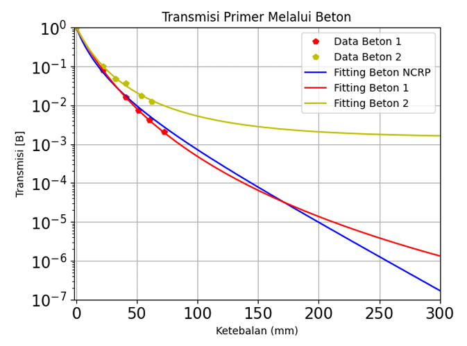
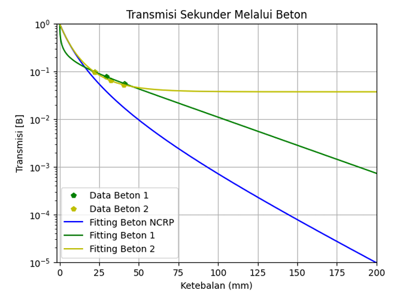

Kalkulasi Perisai Radiasi
Tujuan dari kalkulasi perisai radiasi adalah untuk menentukan ketebalan perisai yang memadai guna mengurangi kerma udara di suatu area hingga mencapai nilai ≤ P/T. Faktor transmisi [B(x)] didefinisikan sebagai perbandingan antara kerma udara di belakang perisai dengan ketebalan x terhadap kerma udara di lokasi yang sama tanpa perisai. Nilai ini juga dapat dihitung menggunakan rumus berikut:

Dengan: Jarak (d) | Occupancy Factor (T) | Workload (W) | Use Factor (U)
Setelah mendapatkan faktor transmisi kita dapat mencari ketebalan perisai (beton) yang dibutuhkan menggunakan kurva berikut ataupun rumus dibawah ini


Untuk Radiografi Umum, perisai primer, nilai 𝛼 sebesar 2,651 untuk timbal dan 0,03994 untuk beton, 𝛽 sebesar 16,56 untuk timbal dan 0,1448, dan 𝛾 sebesar 0,4585 untuk timbal dan 0,4231 untuk beton.
Sumber: National Council on Radiation Protection and Measurements. (2004). Structural shielding design for medical X-ray imaging facilities. National Council on Radiation Protection and Measurement.
Hasil Penelitian
Hasil dari pengukuran massa jenis beton komersial di Indonesia dapat dilihat pada diagram dibawah.


Pengukuran faktor transmisi dibagi menjadi dua bagian yakni perisai primer dan perisai sekunder seperti pada gambar dibawah. Sinar-X dipancarkan dari pesawat sinar-X dengan tegangan tabung 9,6 kVp dan arus tabung 70 mAs. Pada perisai primer luas lapangan yang digunakan dengan bukaan kolimator sekecil mungkin atau narrow beam dengan ukuran sekitar 2 cm × 1 cm pada dosimeter yang berjarak 1 meter dari tabung pesawat sinar-X, sedangkan untuk perisai sekunder luas lapangan yang digunakan sebesar 25 cm × 25 cm pada jarak 1 meter dari kepala pesawat sinar-X.


Perbandingan kurva hasil fitting antara transmisi dan ketebalan perisai beton 1 dan beton 2 dengan kurva pada NCRP 147

